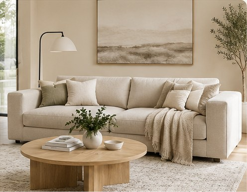
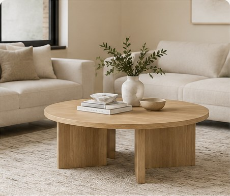
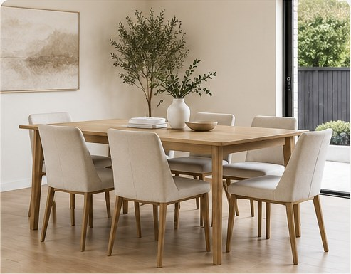

3-seat sofa
Soft neutral upholstery with a versatile, timeless silhouette.
Approx. 220 W × 90 D × 85 H cm
Explore modern furniture in 3D and see how individual pieces might look in your room.

Soft neutral upholstery with a versatile, timeless silhouette.
Approx. 220 W × 90 D × 85 H cm

Warm oak finish, simple sculptural shape.
Approx. 115 diameter × 42 H cm

Natural oak dining table with six neutral upholstered chairs.
Table: 185 W × 100 D × 75 H cm
Chair: approx. 48 W × 50 D × 91 H cm
Virtual staging disclaimer: Images and 3D furniture are digitally generated for illustrative purposes only. Furniture is not included in the property sale. AR representations and placement are indicative; furniture may be resized and should not be relied upon for accurate room measurements. Buyers should verify dimensions independently. No affiliation with any furniture brand is implied.